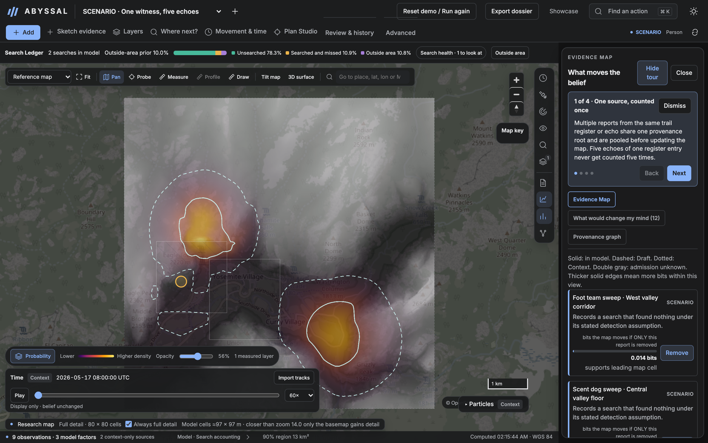
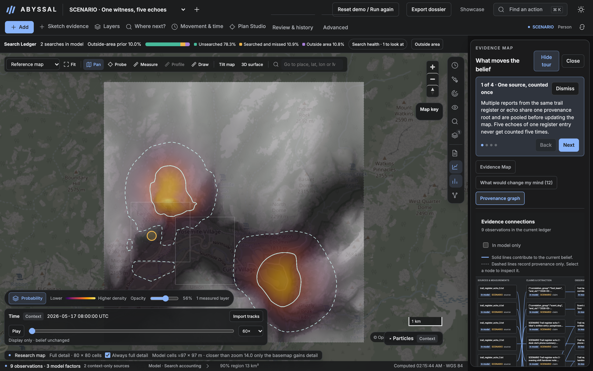

Five Reports, One Source
Corroboration, provenance-root pooling, prior-normalised mixtures, and measuring how many bits a single witness actually moves a map.
In September 1641, the English merchantman Merchant Royal sank somewhere off Land's End carrying a cargo of Spanish silver and gold. In ABYSSAL's reference archive for that wreck, there are 114 retained historical and archival records: contemporary broadsheets, maritime histories, modern expedition summaries, correspondence, and survey indices.
A naive analyst—or an uncritical language model summarising a folder of PDFs—sees 114 documents agreeing that the ship went down roughly ten leagues from Land's End and feels a surge of confidence. Yet when you trace the footnotes backwards, almost every single quantitative distance claim collapses into one 1641 pamphlet. You do not have 114 independent sightings. You have one voice echoed across four centuries.
This is the echo-chamber fallacy, and it is one of the quietest, most destructive failure modes in intelligence analysis, historical reconstruction, and search-and-rescue alike. In standard Bayesian updating, multiplying likelihoods assumes conditional independence: \(P(E_1, E_2 \mid x) = P(E_1 \mid x) P(E_2 \mid x)\). If \(E_2\) is merely a photocopy, radio relay, or evening handover note summarising \(E_1\), multiplying them counts the same uncertain witness twice—sharpening the posterior peak and shrinking the credible region purely through clerical repetition.
A hiker signs a trailhead register near the Mist Trail in Yosemite Valley. Over the next six hours, that single handwritten entry generates five documents in the search command post: (1) the original register entry, (2) a desk clerk's phone summary, (3) an evening shift handover note, (4) a dispatch radio relay, and (5) a regional bulletin digest.
Meanwhile, a backcountry ranger independently logs a sighting on the opposite side of the valley. If a search system treats all six documents as independent clues of equal reliability, the five echoes of one register entry will overwhelm the independent ranger by a factor of five—even though the hiker may have changed their mind five minutes after signing the book. Independence is a claim about how evidence was generated, never a default assumption.
1. Log-space grid Bayes and order invariance
ABYSSAL represents a search domain as a finite lattice of \(N\) spatial cells \(i \in \{1, \dots, N\}\), paired with a normalised prior \(p_i \ge 0\) satisfying \(\sum_{i=1}^N p_i = 1\) (plus an explicit outside-domain mass when declared). Every inference computation executes in double-precision log space so that products of many small likelihoods never underflow to zero and unsupported cells remain strictly at \(-\infty\):
If an observation assigns zero likelihood across all supported cells (\(\log Z = -\infty\)), the engine refuses to silently renormalise or invent probability mass—it raises an explicit contradiction error. Moreover, because independent provenance roots combine by addition in log space and same-root layers are pooled before accumulation, the resulting posterior is strictly invariant to the order in which evidence is admitted.
2. Positive clues: why peak-normalised kernels distort reliability
No human witness, bearing, or sonar contact is infallible. A clue might genuinely reflect the target's position, or it might be a false sighting, a misread compass, or a transcription error. ABYSSAL models every positive observation with an explicit analyst-stated reliability parameter \(r \in (0, 1]\) as a two-component contamination mixture: with weight \(r\) the observation follows its spatial kernel \(K_i \ge 0\), and with weight \(1 - r\) it is uninformative background noise.
Here lies a subtle mathematical trap that separated ABYSSAL's legacy Model v1 from its current default Model v2. In Model v1, the spatial kernel was normalised to a peak value of one (\(\max_i K_i = 1\)), giving the likelihood \(L_i^{(1)} = (1 - r) + r K_i\). That looks harmless—until you place a narrow clue inside a large ocean domain.
When a kernel covers only a tiny fraction of the map, its prior-weighted average \(\bar{K} = \sum_i p_i K_i\) is tiny (say, \(0.01\)). Under peak normalisation, multiplying by \((1-r) + r K_i\) gives the uninformative background term \((1-r)\) vastly more integrated area than the informative peak \(r K_i\). Setting \(r = 0.75\) does not actually give the clue 75% weight in the posterior; it leaves almost all of the probability mass diffused across the ocean.
Model v2 repairs this by normalising the informative component against the original supported prior before mixing:
Let \(\bar{K} = \sum_{j \in \mathcal{S}} p_j K_j\) be the prior-weighted expectation of the spatial kernel over supported cells \(\mathcal{S}\), and define the pure informative posterior \(q_i = p_i K_i / \bar{K}\). Then the v2 likelihood and resulting single-clue posterior are:
Under v2, reliability \(r\) recovers its exact intuitive meaning: for a single clue against the prior, the posterior is literally a convex combination placing weight \(r\) on the clue's distribution \(q\) and weight \(1 - r\) on the prior \(p\).
How much does this single normalisation correction matter in practice? On the Merchant Royal reference case (a range annulus at \(47.226\text{ km}\) with scale \(19.446\text{ km}\) and reliability \(r = 0.75\)), moving from v1 to v2 lifts the posterior mass within \(\pm 1\) scale of the pamphlet's ring from 6.53% to 35.63% and tightens the 50% credible area from 570,052 km² to 14,713 km²—without changing a single assumption about the pamphlet itself.
3. Provenance-root geometric pooling
Now suppose \(n\) admitted observations \(m = 1, \dots, n\) all descend from the same underlying provenance root \(R\) (for instance, the five echoes of the Mist Trail register). Rather than multiplying their likelihoods into \(\prod_{m=1}^n L_m\), ABYSSAL groups observations by provenance root and applies equal-weight geometric (log-linear) pooling within each root before combining across independent roots:
Check the boundary behaviour immediately. If a witness statement is copied verbatim five times so that \(L_1 = L_2 = \dots = L_5 = L\), then:
Identical duplicates have zero ability to sharpen the posterior. If the five retellings differ slightly in wording or spatial spread—perhaps the radio relay broadened the radius while the written entry was sharper—geometric pooling forms their exact consensus log-likelihood while preserving a single unit of evidential weight. It is a conservative, deterministic approximation rather than a fitted generative model of rumour transmission, and ABYSSAL labels it plainly as such.
Interactive: Echo-chamber inflation vs. provenance pooling
Slide the echo count from 1 to 10. Under naive multiplication, repeating one noisy witness manufactures phantom precision and drives \(D_{\mathrm{KL}}\) upward with every photocopy. Under provenance pooling, the curve and bit-shift remain completely invariant.
4. Measuring influence in bits: single-item vs. whole-source counterfactuals
When a commander looks at a probability map, the most important operational question is rarely "what is the value at pixel (42, 61)?" It is: "which piece of evidence is actually driving this map—and what happens if that source turns out to be wrong?"
ABYSSAL's Evidence Map answers this using Kullback–Leibler divergence measured in bits (base-2 logarithm), where one bit corresponds to one fair coin flip of surprise. Crucially, it computes two distinct counterfactuals:
- Per-observation leave-one-out influence: Remove only observation \(k\) while leaving every other admitted observation in place, recompute the posterior \(P_{-k}\), and measure:
$$D_{\mathrm{KL}}\bigl(P_{\text{full}} \,\|\, P_{-k}\bigr) = \sum_{i=1}^{N} P_{\text{full}}(i) \log_2 \frac{P_{\text{full}}(i)}{P_{-k}(i)} \quad \text{bits}$$
- Whole-source counterfactual influence: Remove an entire provenance root \(R\) (all \(n\) of its echoes simultaneously), recompute \(P_{-R}\), and measure \(D_{\mathrm{KL}}(P_{\text{full}} \,\|\, P_{-R})\).
The contrast between those two numbers is a diagnostic X-ray of your evidence base. In ABYSSAL's deterministic One witness, five echoes scenario in Yosemite Valley:
- Removing any single echo of the Mist Trail register moves the map by just 0.000 to 0.002 bits—because the remaining four echoes still carry the provenance root at weight \(1/4\) each.
- Removing the whole Mist Trail source (all five echoes together) moves the map by 2.231 bits—more than the independent ranger patrol sighting (1.231 bits) and the terrain-aware walking anchor (0.385 bits).
Notice a vital mathematical property: KL divergences are not additive percentages. You cannot sum the per-item bars to get the whole-source bar, nor sum whole-source bars to get total information gain over the prior, because observations interact nonlinearly through the normalising constant \(Z\) and spatial overlap. ABYSSAL states this plainly right inside the Evidence Map header so no reader mistakes bits for pie-chart slices.

Remove and exact LIFO Undo—returning the posterior SHA-256 hash bit-for-bit to its baseline.
Positive sightings tell you where to look first. But in almost every real search—whether for a missing hiker, an aircraft wreck, or a silent ship—the sightings dry up quickly. What reshapes the map day after day is looking and finding nothing. That is where we turn in Part III.